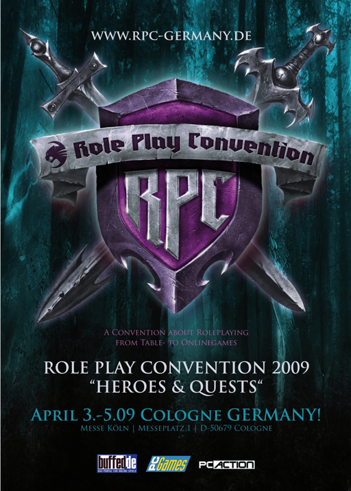

| Übersicht,
Allgemeines |
|
Gewinnspiel RPC 2009 (10  ) )
|
Support
 |
„Challenge“ – so das Motto der diesjährigen Role Play Convention in Köln vom 3. – 5. April. Zusammen mit ROCCAT, dem Hauptsponsor, könnt ihr umsonst den Dunkelmondjahrmarkt, Mittelalter Turniere, Live-Raids und jede Menge Rollenspiel-Zubehör erkunden und erfarmen. Also, falls ihr keine Elfen-Ohren besitzt, spitzt sie trotzdem: Gewinnt 1 x 3 und 6 x 2 Eintrittskarten für ein Erlebnis, dass ihr nicht so schnell vergessen werdet.

Um zu gewinnen müsst Ihr nur folgende Frage richtig beantworten:
Wie heißt der Hauptsponsor der RPC 09?
Sendet eine E-Mail mit der richtigen Antwort und unter Angabe Eurer Adresse an gewinnspiel@scherbenwelten.de
|
03.03.09 21:22
|
|
| Nathan von Xanthias (RIP) |
öhm ich glaube da nehmen jetzt welche eindeutig drogen...
also 4 Player zeug okey, aber das geht ein wenig zu weit. |
03.03.09 21:33
|
|
| Elijah (RIP) |
Wann werden die Gewinner gezogen ? |
03.03.09 21:39
|
|
| Warstein (RIP) |
Kann das nicht Extern verlinkt werden oder ins offtopic? |
03.03.09 21:55
|
|
| Bibi Biberzahn (RIP) |
Ich glaube, ein Beitrag von der Spielleitung/vom Support ist nicht offtopic. |
03.03.09 21:57
|
|
| Titania von Distelflamme (RIP) |
ich weiß es, ich weiß es, ich sag´s aber nicht :P |
03.03.09 21:58
|
|
| Warstein (RIP) |
Na ist aber Definitive Werbung |
03.03.09 21:58
|
|
| Eran von Aibheisgârd (RIP) |
Hey cool, ROCCAT!
War das nicht diese tolle Hamburger Firma, die seit etwa 2 Jahren Eingabegerät (eine Maus und eine Tastatur) verkauft, die 2007 irgendwann erscheinen sollte und auf die ich vorbestellenderweise in etwa auch schon solange warte.
Nur auf die Tastatur versteht sich!
Die beiden bestellten Mäuse sind schon ne Weile hier, wobei eine davon auch schon wieder zurückgewandert ist...
Die sollen ned irgendnen Gelumpe sponsoren, sondern ihr Zeugs endlich rausbringen!
btw. Sollte ich nächstes mal auf Ebay irgendwas verkaufen werde ich mir selbstverständlich die Möglichkeit offen halten hier im Allgemeinen Werbung dafür zu verlinken!
:) |
03.03.09 22:18
|
|
| Falster von Distelflamme (RIP) |
hab eine roccat geiles teil^^ |
03.03.09 22:19
|
|
| Marduc (RIP) |
Wer G15, Copperhead und eXact Mat hat, braucht kein Roccat...
! n33d m0r3 4dv3r7!5!n9 f0r m0n3y! :( |
03.03.09 22:55
|
|
| Achille de Beaufort (RIP) |
Irgendwie strebt die Qualität des Forums allmählich gegen Null :-( |
04.03.09 0:02
|
|
| Zur-du-quin (RIP) |
Boah, man, haettet ihr das nicht ne Woche vorher machen koennen? Nun hab ich bereits meine Karte regulaer gekauft. |
04.03.09 10:07
|
|
| Damona Leyniél von Dahén (RIP) |
coool... *email sendet*
Da ich sowieso dahin wollte... |
04.03.09 16:00
|
|
Support
|
Die Auslosung unter allen richtigen Einsendungen wird am kommenden Dienstag, den 10.03.09 vorgenommen.
Die Gewinner werden dann via Mail von uns benachrichtigt.
Viel Glück und vielen Dank für die rege Teilnahme!
|
04.03.09 17:23
|
|
| Spectre (RIP) |
Wie lächerlich. |
04.03.09 19:06
|
|
| Jolina (RIP) |
Hier haben paar Leute scheinbar den falschen Fuß zuerst aus dem Bett gesetzt...
Was ist so schlimm daran ein wenig Werbung macht, wenn man es quasi Kostenfrei raus gibt. Immerhin gibt "diese Werbung" auch Einblick auf das wo rum es geht. Wenn da nur stehen würde "Wir verlosen 15 Karten für RPC 2009" wäre das ja wohl ein etwas kurzer und nicht sehr informativer Beitrag gewesen.
Okay, die Aufgabe hätte ein wenig kniffliger sein können. In etwa, die Antwort bitte in Sindarin. ;D |
05.03.09 20:13
|
|
| Xondosch Blutschnaps (RIP) |
Bedenke, die Aufgabe kostet aber nicht 0,50 Cent wie bei einschlägigen Gewinnspielen.
Ich finde die Idee nett und sage meinen Dank :) |
05.03.09 22:02
|
|
| Eukal der Jeschmeidige (RIP) |
Die Antwort lautet:
Eukal! |
06.03.09 0:02
|
|
Support
|
Hallo,
soeben wurden alle Gewinner via Mail benachrichtigt.
Wir gratulieren und wünschen natürlich viel Spaß auf der Role Play Convention.
Generell erhoffen wir uns natürlich, dass unsere Gewinnspiele/Werbung für Scherbenwelten in anderen Portalen nicht allzu garstig aufgenommen werden, wie es hier mitunter nachzulesen ist ;)
All diejenigen, die keine Gewinnbenachrichtigung erhalten haben, sei gesagt, dass es uns natürlich leid tut, jedoch danken wir für die Teilnahme. Vielleicht klappts ja beim nächsten Mal.
Wir drücken die Daumen.
Grüße,
das Support-Team |
10.03.09 22:13
|
|
| Edward (RIP) |
naja ich persönlich kann mir gut vorstellen, wenn man in dem anderen Spiel dafür bezahlt, dass man keine Werbung ertragen muss und dann einem Werbung/Gewinnspiele vor die Nase gesetzt werden, dass die Reaktionen ähnlich ausfallen;) |
10.03.09 22:19
|
|
| Celebrimbor (RIP) |
Ich fand das eine nette Idee. Mussten dafür ja auch keine 01379 Nummer anrufen! Und die Gewinnchancen waren wirklich gut! *daumen hoch* |
11.03.09 9:52
|
|
| Parrakus (RIP) |
Doch fand das auch ne nette Sache...
War nicht aufdringlich oder gar ne Abzocke - daher :
Gute Aktion! :) |
11.03.09 10:15
|
|
| Sarasan (RIP) |
Wer sich nicht zu schade ist, allerorten auf eine derart profane Weise vorgeführt zu werden und auf eine solchermaßen schwachsinnige Frage eine Antwort zu formulieren, der mag ja daran teilnehmen. Ich persönlich komme da keinesfalls in Versuchung und ziehe es vor, meine Karte selbst zu kaufen und denjenigen zu ignorieren, der meine Intelligenz dergestalt grob beleidigt. |
11.03.09 13:02
|
|
| Morgoth Turambar (RIP) |
Also ich weiss nicht, warum man sich so aufregt?
Es kostet kein Geld, es ist nicht im Spiel aufdringlich.
Also ich danke für die 2 Karten die ich gewonnen habe. |
11.03.09 21:35
|
|
| Levthan Araxes (RIP) |
Dann kann man allen Teilnehmern gratulieren und möglichst wenig Werbemails wünschen ;) |
11.03.09 22:28
|
|
Galaton Dragus
 |
Verhalt Dich gefälligst wieder wie ein Chromler...Du brave Reinkarnation^^ |
12.03.09 0:24
 |
|
| Chevonne Siobhan (RIP) |
Galaton, das ist bestimmt ein versteckter Hilferuf. Vielleicht sucht er nach jemandem, der ihm Asyl gewährt. *g* |
14.03.09 10:23
|
|
| Celebrimbor (RIP) |
Sind bei den anderen bereits die Karten angekommen? |
26.03.09 15:22
|
|
| Damona Leyniél von Dahén (RIP) |
Meine Karten sind angekommen, vielen Dank nochmal an dieser Stelle... |
26.03.09 17:34
|
|
| Parrakus (RIP) |
Meine sind auch da! Auch von mir nochmals ein Danke schön! :)
|
26.03.09 18:37
|
|
| Celebrimbor (RIP) |
So meine Karten sind auch angekommen! Dankeschön :o) |
03.04.09 11:53
|
|
Übersicht,
Allgemeines
|